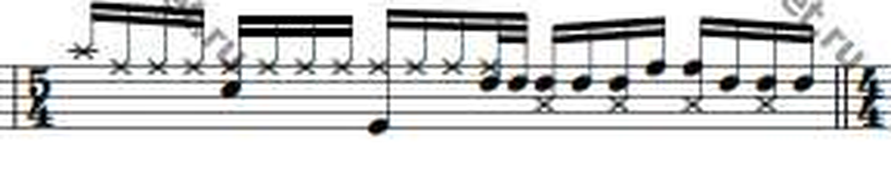
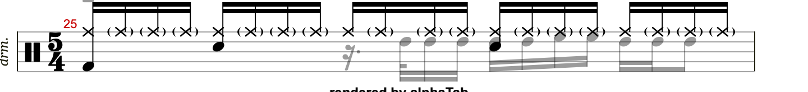
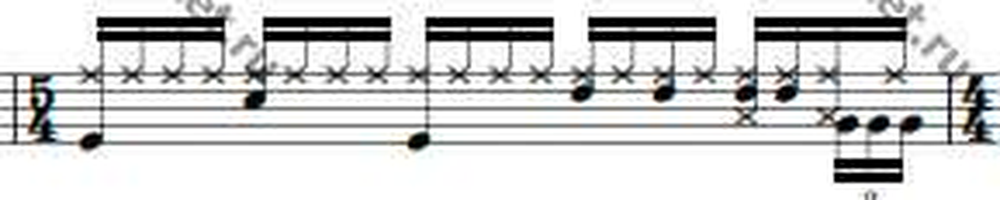
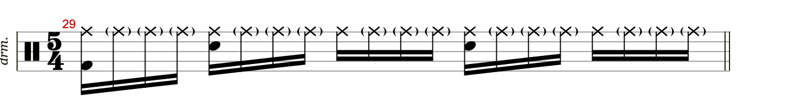
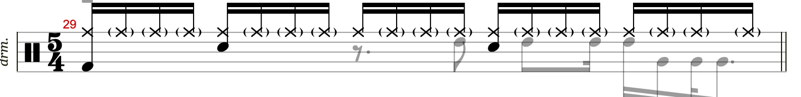
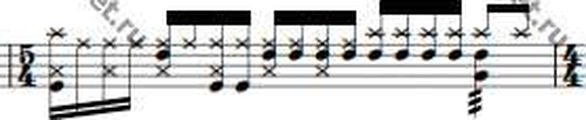
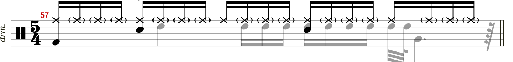
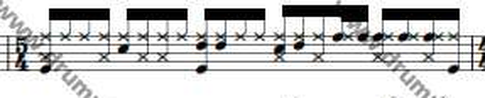
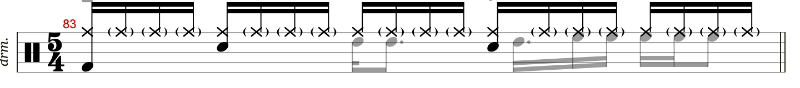

Frank Zappa, Joe's Garage Act III. Songsterr s35881, drum track, Vinnie Colaiuta. Source is the Drumnet.ru drumset chart by BartoRomeo. Built 2026-09-08.
The ask was to add the chart's tom locations to the Watermelon GP file, with the legend given directly: the toms are the G, the D, and the F above the F, and anything carrying an x notehead gets skipped.
The tab carried six tom notes at the start of this pass, four Low Tom and two High Tom, and all six sit inside the 96 bars the chart transcribes. The chart carries 179 filled tom noteheads over those same bars that the tab never received. All 179 are now in the file, at the bar and beat the transcriber drew them.
The chart is a five-line drumset staff. Numbering the positions from the top line down, 0 for the top line and 8 for the bottom, the note letters read in the treble names a drummer uses: E on the bottom line, F, G, A, B, C, D, E, F on the top line.
The Guitar Pro file already agrees with that reading. Its own drum kit definition stores a StaffLine for every articulation, and the numbers are the same scale: Snare sits at 3, Ride at 0, High Tom at 2 and Very Low Tom at 6. So two of the three tom positions carry straight across with no interpretation at all.
| Chart position | Lane | Filled heads | GP articulation | MIDI | StaffLine | Fit |
|---|---|---|---|---|---|---|
| the F above the F, top line | 0 | 35 | High Floor Tom (hit) | 50 | 1 | one position lower |
| the D, fourth line | 2 | 98 | High Tom (hit) | 48 | 2 | exact |
| the G, second line | 6 | 46 | Very Low Tom (hit) | 43 | 6 | exact |
The top line carries two instruments at once: the ride, drawn with x noteheads, and a tom, drawn with filled ovals. Reading the top line naively would import the whole ride part as toms.
The two separate on ink. Measuring the mean darkness of a five by five pixel box centred on each head, an x leaves its four edge midpoints on white paper and a filled oval does not. On the top line, where the decision actually has to be made, the two populations do not touch:
| Population | Count | Ink, mean of a 5×5 box | Reading |
|---|---|---|---|
| x noteheads, top line | 57 | 104 to 127 | ride, skipped |
| watermark letters and noise, top line | 18 | 131 to 158 | not notation, skipped |
| nothing at all, top line | 0 | 159 to 185 | the empty gap that makes the cut safe |
| filled tom heads, all three lanes | 179 | 186 to 220 | kept |
| snare, a filled control | 154 | median 220 | control |
| kick, a filled control | 410 | median 201 | control |
| Both counts are chart heads over the chart's own 96 bars. The tab holds 177 snare and 99 kick across those same bars. | |||
Across all three tom lanes the same cut skips 64 x-like marks, 33 watermark fragments and 4 more in the 160 to 180 band, and keeps 179.
The chart runs 96 bars and the tab runs 105, so the two had to be tied together first, since a wrong offset writes every note into a wrong bar. Chart display bar n is GP display bar n plus 9.
That offset is not a guess. The chart carries nine rehearsal marks and the tab carries eleven named sections, and every one of the chart's nine lands on a named section at the same offset, including a solo that runs exactly 24 bars in both:
| Chart bar | Chart mark | GP bar | GP section | Offset |
|---|---|---|---|---|
| 1 | A | 10 | Head 1 | +9 |
| 17 | B | 26 | Bridge 1 | +9 |
| 25 | A | 34 | Head 3 | +9 |
| 33 | Solo I | 42 | Solo | +9 |
| 57 | A | 66 | Head 4 | +9 |
| 65 | A | 74 | Head 5 | +9 |
| 73 | B | 82 | Bridge 2 | +9 |
| 81 | A | 90 | Head 6 | +9 |
| 89 | Coda | 98 | Outro | +9 |
Two more facts agree with it. The 96 chart bars fill GP display bars 10 through 105 exactly, with none left over at either end. And the meters line up throughout, since the chart alternates 4/4 and 5/4 and so does the tab from its second bar onward.
Inside one bar this engraving is close to linear in time. On page 1 system 1 the filled heads sit at 79.3, 128.3, 164.8, 176.8, 225.9 and onward, whose smallest gap is 11.9 pixels and whose other gaps are 24.4, 36.4 and 48.8. That is one sixteenth note per 12.2 pixels, and sixteen of them land on the bar's own closing barline.
So each bar was fitted with a single free parameter, the x of its downbeat, with the sixteenth width forced to (x_end − x0) / nsub. Across all 96 bars the fitted width came out at a median of 12.22 pixels, from 11.43 to 13.46.
| Measure | Value | Meaning |
|---|---|---|
| Bars fitted | 96 of 96 | no bar dropped |
| Median position error | 0.10 of a sixteenth | about 1.2 pixels, the centroid noise floor |
| 90th percentile | 0.21 | |
| Worst single note | 0.28 | inside a sixty-fourth |
| Written as sixteenths | 135 | |
| Written as thirty-seconds | 35 | |
| Sitting on a sixteenth triplet | 9 | placed on a sixty-fourth grid, 1/12 of a sixteenth away |
Three pictures per bar: the printed chart, the tab as it stood, and the tab carrying the chart's toms. The added voice draws in grey, so everything black is untouched original.









Positions are counted in sixteenth notes from the downbeat, so 0 is beat 1 and 4 is beat 2. A 4/4 bar runs 0 to 15 and a 5/4 bar runs 0 to 19.
| GP bar | Chart bar | Toms | F above the F | D | G |
|---|
Two earlier detectors under-counted and both failed the same way. A staff line spans about 97 percent of the staff width, so counting pixels darker than a fixed threshold looks safe. That rule fails here, since this scan darkens unevenly down the page, and on page 1 the line at row 280 sits at grey 112 while the line at row 353 sits at 176. A threshold of 150 sees the first and misses the second, which lost two systems on page 1 and three on page 5.
The row median does not care what the grey happens to be, because the line covers more than half the row. Under that rule the page yields 48 systems with perfectly regular gaps, 8 then 11, 11, 11 and 7, which is 96 bars at two per system, and every printed bar number on all five pages agrees.
Full staff height of ink alone returns 9 to 28 candidates per system where 3 exist, because a stem running from a low notehead up to its beam covers the staff too. What separates them is the poke-out: a barline stops at the staff and a stem continues into its beam. One system on page 4 has a beam passing over its middle double bar, so there the test relaxes to nothing below the staff, and the middle bar is then chosen by the 16 to 20 sixteenth proportion the two bars must share.
The toms went into voice slot 1, which was empty on all 105 drum bars. Nothing was displaced, and deleting that voice returns the file to its exact starting state.
While this build was running, another session read the same Drumnet pages and published its result to the copy tab s6857183, "Watermelon In Easter Hay Brandon edit". Revision 8968036 landed at 17:17 UTC and 8968524 at 17:43. Quoting that revision's own note, not this build: the chart supplied the tom count and the drum, Moises stems supplied the timing, its tom total is 164, with 34 held back where the stem did not carry the chart's count. The total for this build is 179, and that is the number behind every figure on this page.
| GP bar | This build | Live tab | What the chart shows at 9× |
|---|---|---|---|
| 25 | 10 | 3 | a run of ten filled ovals fills the second half of chart bar 16, eight on the D and two a position higher |
| 15 | 3 | 6 | three solid ovals in chart bar 6, one on the top line and two on the D, none on the G |
| 95, 97, 99, 100, 101, 103, 104 | 19 | 0 | the Coda, marked p, pp and "cymbal on dome", is where a stem gate is least able to hear a soft tom |
| 14, 93 | 0 | 6 | not yet inspected |